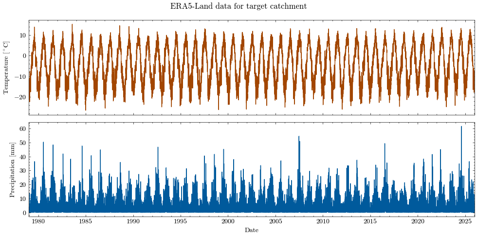
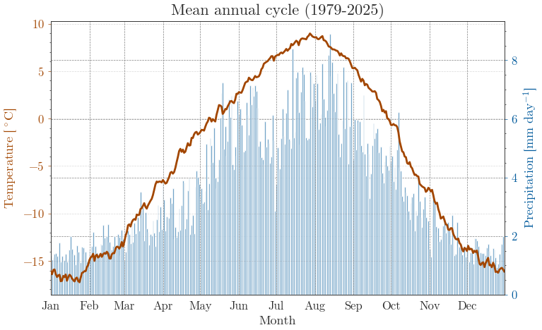

Climate forcing data#
Now that we have all the static catchment data, we can turn to the climate forcing needed for MATILDA.
In this notebook we will…
request the reference elevation of the forcing data,
request ERA5-Land temperature and precipitation for the catchment,
inspect the returned time series,
and store the results for the next workflow steps.
🌦️ The aim is not only to obtain the data, but also to make each step easy to follow. Even when code cells are hidden in the final Jupyter Book, the printed outputs and figures should still show a clear workflow.
To get started, we read the settings from the config.ini file again.
We will need:
paths for input, output, and figures,
the name of the output GeoPackage from Notebook 1,
whether projections are enabled,
whether a refreshed ZIP archive should be created,
and the MATILDA-Webservice URL plus API key for the requests.
Output GeoPackage: output/catchment_data.gpkg
Figure directory: output/figures/
If you have decided to back up your output files, you can now load them.
Next, we load the catchment geometry from Notebook 1.
This geometry is the spatial reference for all following requests:
the reference elevation is calculated for this catchment,
and the ERA5-Land time series are aggregated to exactly this area.
Loaded catchment layer with 1 feature(s).
Catchment CRS: EPSG:4326
| LABEL | area | geometry | |
|---|---|---|---|
| 0 | 1 | 3.017655e+08 | MULTIPOLYGON (((78.14784 42.05075, 78.14734 42... |
ERA5-Land reference elevation#
ERA5-Land provides the atmospheric forcing variables we need, but for a lumped hydrological model we also need one representative reference elevation of the forcing data.
This elevation is derived from the surface geopotential:
The geopotential height can be calculated by dividing the geopotential by the Earth’s gravitational acceleration, (g = 9.80665; m; s^{-2}).
In practical terms, this gives us a representative elevation for the catchment-wide forcing data — similar in spirit to the elevation of a weather station.
✨ In the notebook, we simply request this value from the MATILDA-Webservice and inspect the result.
✅ Reference elevation successfully retrieved.
Geopotential mean: 32556.80 m2 s-2
Reference elevation: 3319.87 m a.s.l.
Elapsed time: 1.0 s
ERA5-Land temperature and precipitation data#
Select the date range#
The selected time period depends on whether the workflow should prepare only past forcing data or also support later scenario processing.
If
PROJECTIONS=False, the date range is taken directly from theconfig.ini.If
PROJECTIONS=True, the workflow requests the historical period from 1979 onward to provide a broader baseline for later bias adjustment.
The selected date range is 1979-01-01 to 2026-01-01
Download ERA5-Land data#
For the MATILDA model, the key meteorological inputs are:
air temperature
precipitation
We request both as catchment-aggregated daily time series for the selected period.
The returned values are then converted into a compact pandas.DataFrame:
temperature from Kelvin to °C,
precipitation from meters to millimeters.
💡 How are the ERA5-Land data aggregated?
The ERA5-Land data has an approximate spatial resolution of 9 km. Depending on the size of your catchment area, the data may cover many or just a few grid cells. The web service calculates one area-weighted, catchment-wide average for each day. This means each cell is weighted according to its overlap with the catchment area.
✅ ERA5-Land forcing data successfully retrieved.
Date range: 1979-01-01 to 2025-12-31
Number of daily records: 17167
Elapsed time: 15.5 s
| dt | temp | temp_c | prec | |
|---|---|---|---|---|
| 0 | 1979-01-01 | 257.521054 | -15.628946 | 0.026909 |
| 1 | 1979-01-02 | 256.569882 | -16.580118 | 0.004765 |
| 2 | 1979-01-03 | 257.998206 | -15.151794 | 0.001595 |
| 3 | 1979-01-04 | 258.441277 | -14.708723 | 0.279193 |
| 4 | 1979-01-05 | 258.189412 | -14.960588 | 0.106927 |
The first rows already show the structure of the forcing data:
a timestamp,
the original temperature,
the converted temperature in °C,
precipitation converted to mm per day.
Quick summary statistics of the forcing data:
| variable | minimum | mean | maximum | unit | |
|---|---|---|---|---|---|
| 0 | Temperature | -26.441147 | -4.236060 | 15.152431 | °C |
| 1 | Precipitation | -0.000024 | 3.618221 | 61.645001 | mm d-1 |
A time series plot provides a first impression of the seasonal signal and the variability of both variables.
dt temp_c prec
0 1979-01-01 -15.628946 0.026909
1 1979-01-02 -16.580118 0.004765
2 1979-01-03 -15.151794 0.001595
3 1979-01-04 -14.708723 0.279193
4 1979-01-05 -14.960588 0.106927
... ... ... ...
17162 2025-12-27 -15.847240 0.013149
17163 2025-12-28 -13.449476 0.238839
17164 2025-12-29 -15.657843 0.552368
17165 2025-12-30 -14.646669 0.050462
17166 2025-12-31 -10.610861 1.756811
[17167 rows x 3 columns]

Saved overview plot to "output/figures/NB2_ERA5_Temp_Prec.png".
For long time series, a short close-up can be useful as well 🔎

Saved climatology plot to "output/figures/NB2_ERA5_Temp_Prec_clim.png".
Store data for next steps#
To continue in the workflow, we store two outputs:
the ERA5-Land forcing time series as
ERA5L.csv,and the reference elevation in
settings.ymlasele_dat.
ERA5-Land forcing data written to "output/ERA5L.csv".
Data successfully written to YAML at output/settings.yml
Updated "output/settings.yml" with ele_dat = 3319.87.
Finally, if requested in the config.ini, we refresh output_download.zip so that all newly generated output files can be downloaded together.
ZIP output disabled in config.ini
✅ Notebook 2 is complete. You can now continue with Notebook 3.